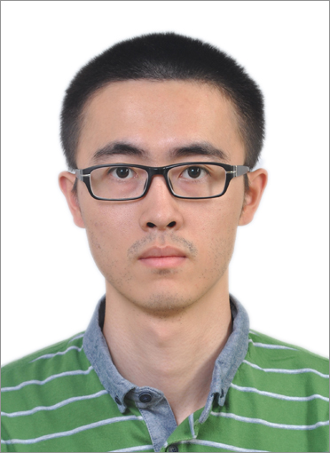

Zhengyang Wang
|  | Zhengyang Wang, Ph.D. Candidate |
 |
Short Biography
I am currently a Ph.D. candidate in Computer Science at Texas A&M University. My advisor is Dr. Shuiwang Ji, who leads the Data Integration, Visualization, and Exploration (DIVE) Laboratory. My research interests include machine learning, data mining and deep learning.
News
Our paper “Noise2Same: Optimizing A Self-Supervised Bound for Image Denoising” has been accepted to NeurIPS 2020!
I have passed my dissertation defense! I will join Amazon as an applied scientist in Jan, 2021!
Our paper “CorDEL: A Contrastive Deep Learning Approach for Entity Linkage” has been accepted to ICDM 2020!
Our paper “Second-Order Pooling for Graph Neural Networks” has been accepted to IEEE Transactions on Pattern Analysis and Machine Intelligence (TPAMI)!
Our paper “Kronecker Attention Networks” has been accepted to KDD 2020!
Education
Ph.D., Computer Science, Texas A&M University, Aug 2018 - Present
Ph.D. Student, Computer Science, Washington State University, May 2016 - July 2018
M.S., Mathematics and Computer Science, New York Univeristy, August 2013 - May 2015
B.S., Information and Computational Mathematics, Nanjing University, September 2009 - June 2013
Non-degree Exchange program, Applied Mathematics and Statistics, Stony Brook University, August 2012 - December 2012
Selected Projects
Publications
Conference Papers
Yaochen Xie, Zhengyang Wang, and Shuiwang Ji
Noise2Same: Optimizing A Self-Supervised Bound for Image Denoising
Advances in Neural Information Processing Systems (NeurIPS), x-x, 2020Zhengyang Wang, Bunyamin Sisman, Hao Wei, Xin Luna Dong, and Shuiwang Ji
CorDEL: A Contrastive Deep Learning Approach for Entity Linkage
Proceedings of the 20th IEEE International Conference on Data Mining (ICDM), x-x, 2020
[paper]Hongyang Gao, Zhengyang Wang, and Shuiwang Ji
Kronecker Attention Networks
Proceedings of the 26th ACM SIGKDD International Conference on Knowledge Discovery & Data Mining (KDD), x-x, 2020
[paper]Zhengyang Wang, Na Zou, Dinggang Shen, and Shuiwang Ji
Non-Local U-Net for Biomedical Image Segmentation
Proceedings of the 34th AAAI Conference on Artificial Intelligence (AAAI), 6315-6322, 2020
[paper][code]Zhengyang Wang, Hao Yuan, and Shuiwang Ji
Spatial Variational Auto-Encoding via Matrix-Variate Normal Distributions
Proceedings of the 2019 SIAM International Conference on Data Mining (SDM), 648-656, 2019
[paper][code]Hongyang Gao, Zhengyang Wang, and Shuiwang Ji
ChannelNets: Compact and Efficient Convolutional Neural Networks via Channel-Wise Convolutions
Advances in Neural Information Processing Systems (NeurIPS), 5203-5211, 2018
[paper][code]Zhengyang Wang, and Shuiwang Ji
Smoothed Dilated Convolutions for Improved Dense Prediction
Proceedings of the 24th ACM SIGKDD International Conference on Knowledge Discovery & Data Mining (KDD), 2486-2495, 2018
Best Paper Award Nomination
[paper][code]Hongyang Gao, Zhengyang Wang, and Shuiwang Ji
Large-Scale Learnable Graph Convolutional Networks
Proceedings of the 24th ACM SIGKDD International Conference on Knowledge Discovery & Data Mining (KDD), 1416-1424, 2018
[paper][code]Lei Cai, Zhengyang Wang, Hongyang Gao, Dinggang Shen, and Shuiwang Ji
Deep Adversarial Learning for Multi-Modality Missing Data Completion
Proceedings of the 24th ACM SIGKDD International Conference on Knowledge Discovery & Data Mining (KDD), 1158-1166, 2018
[paper][code]Zhengyang Wang, and Shuiwang Ji
Learning Convolutional Text Representations for Visual Question Answering
Proceedings of the 2018 SIAM International Conference on Data Mining (SDM), 594-602, 2018
[paper][code]
Journal Articles
Zhengyang Wang, and Shuiwang Ji
Second-Order Pooling for Graph Neural Networks
IEEE Transactions on Pattern Analysis and Machine Intelligence (TPAMI), 2020
[paper][code]Hongyang Gao, Zhengyang Wang, and Shuiwang Ji
ChannelNets: Compact and Efficient Convolutional Neural Networks via Channel-Wise Convolutions
IEEE Transactions on Pattern Analysis and Machine Intelligence (TPAMI), 2020
[paper]Yi Liu, Hao Yuan, Zhengyang Wang, and Shuiwang Ji
Global Pixel Transformers for Virtual Staining of Microscopy Images
IEEE Transactions on Medical Imaging (TMI), 39(6): 2256-2266, 2020
[paper]Hongyang Gao, Hao Yuan, Zhengyang Wang, and Shuiwang Ji
Pixel Transposed Convolutional Networks
IEEE Transactions on Pattern Analysis and Machine Intelligence (TPAMI), 42(5): 1218-1227, 2020
[paper][code]Hao Yuan, Lei Cai, Zhengyang Wang, Xia Hu, Shaoting Zhang, and Shuiwang Ji
Computational Modeling of Cellular Structures using Conditional Deep Generative Networks
Bioinformatics, 35(12): 2141-2149, 2019
[paper][code]
Awards
Texas A&M Institute of Data Science Graduate Travel Grants, 2019
KDD Best Paper Award Nomination, 2018
KDD Student Travel Award, 2018
Alfred Suksdorf Scholarship, Washington State University, 2016
China’s National People’s Scholarship, Nanjing University, 2010, 2011, 2012
Services
Program Committee Member
The 33rd AAAI Conference on Artificial Intelligence (AAAI), 2019
The 23rd Pacific-Asia Conference on Knowledge Discovery and Data Mining (PAKDD), 2019
The 28th ACM International Conference on Information and Knowledge Management (CIKM), 2019
The 34th AAAI Conference on Artificial Intelligence (AAAI), 2020
The 8th International Conference on Learning Representations (ICLR), 2020
The 24th Pacific-Asia Conference on Knowledge Discovery and Data Mining (PAKDD), 2020
The 37th International Conference on Machine Learning (ICML), 2020
The 26th ACM SIGKDD International Conference on Knowledge Discovery & Data Mining (KDD), 2020
The 34th Conference on Neural Information Processing Systems (NeurIPS), 2020
The 35th AAAI Conference on Artificial Intelligence (AAAI), 2021
The 9th International Conference on Learning Representations (ICLR), 2021
The 25th Pacific-Asia Conference on Knowledge Discovery and Data Mining (PAKDD), 2021
Journal Reviewer
IEEE Transactions on Neural Networks and Learning Systems (TNNLS)
ACM Transactions on Knowledge Discovery from Data (TKDD)
BMC Bioinformatics
Teaching
Guest lectures at Texas A&M University
Attention Mechanism, Fall 2019: CSCE 636: Neural Networks
Attention Mechanism, Fall 2018: CSCE 636: Neural Networks
Guest lectures at Washington State University
Introduction to Neural Networks, Spring 2018: CPTS 437: Introduction to Machine Learning
Introduction to Neural Networks, Spring 2017: CPTS 483: Introduction to Machine Learning
Support Vector Machine, Spring 2017: CPTS 483: Introduction to Machine Learning